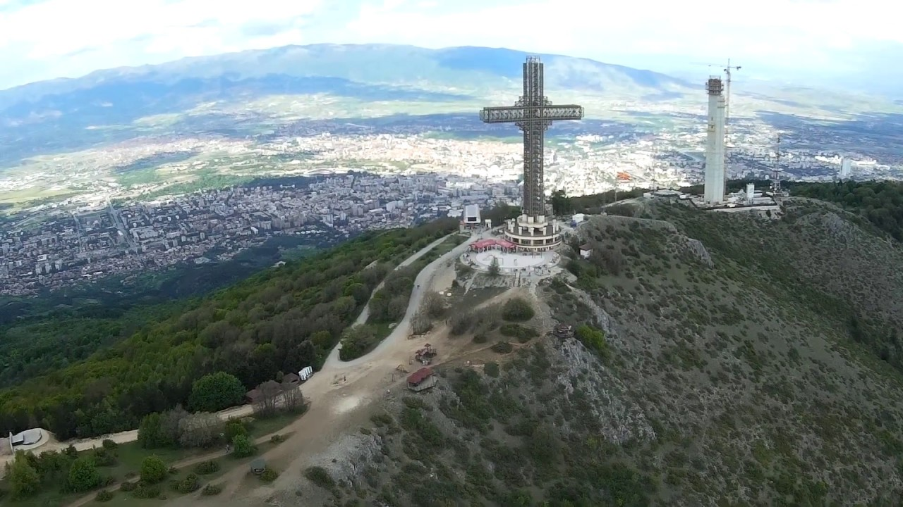
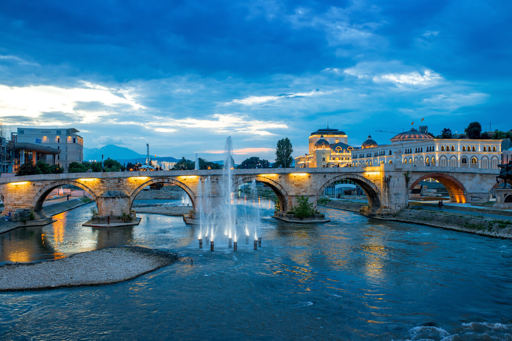
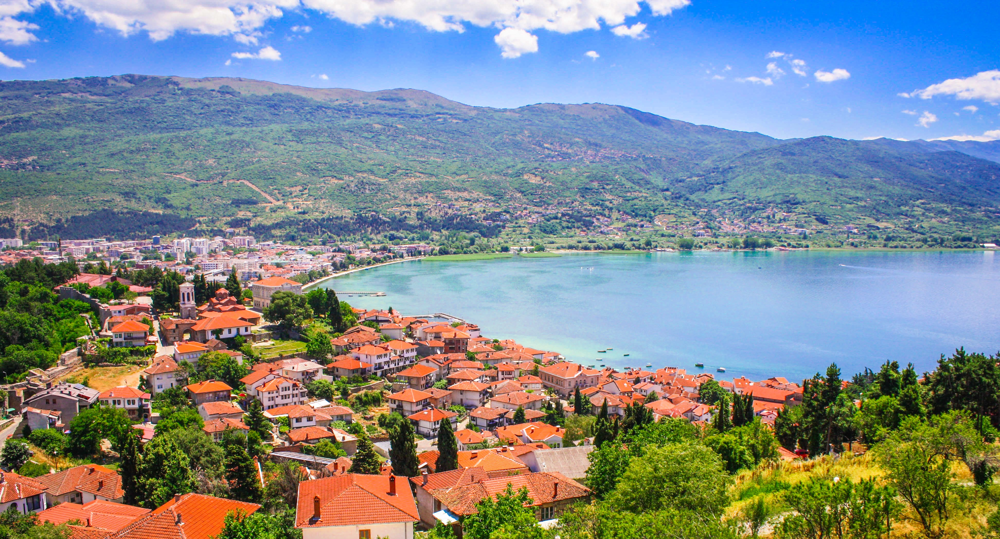

North Macedonia, a landlocked country in the Balkan Peninsula, is a vibrant tapestry of history, culture,
and
natural beauty. With a population of around two million, it is renowned for its diverse cultural heritage,
including
influences from the ancient Macedonian Empire, the Byzantine period, the Ottoman era, and Yugoslav history.
Despite
its modest size, North Macedonia offers a wealth of historical landmarks, stunning landscapes, and warm
hospitality.
Key cities such as Skopje, Ohrid, and Bitola each reflect unique aspects of the country's rich identity and
attract
visitors seeking diverse experiences.
This interactive graphic shows various maps of Eastern and Central Europe. See if you can find North Macedonia:
Major Cities in Macedonia
Skopje: The Modern Capital
Skopje, the capital
and largest city of North Macedonia, is a dynamic metropolis where ancient and modern elements
intertwine. The city is dominated by landmarks such as the Stone Bridge, which connects the historic Old
Bazaar to the more contemporary Macedonia Square. Skopje's architectural style is eclectic, featuring
neo-classical
government buildings from the controversial "Skopje
2014"
project alongside Ottoman mosques and Byzantine churches. The Millennium Cross on Mount Vodno, visible from
almost any part of the city, offers panoramic views and
highlights Skopje’s scenic surroundings.


Ohrid: The Jewel of the Balkans
Ohrid, often referred to as the "Pearl of the Balkans," is a UNESCO World Heritage Site famed for its
historical
and
natural significance. Nestled along the shores of Lake Ohrid, one of Europe’s deepest and oldest lakes, the
city
boasts a rich collection of medieval churches, monasteries, and traditional architecture. Ohrid is
especially
famous
for the Church of St. John at Kaneo, perched on a cliff overlooking the lake. Visitors are drawn to its
serene
beaches, vibrant summer festivals, and the legacy of Saints Cyril and Methodius, who created the Cyrillic
script
here.

Bitola: A Cultural Crossroads
Bitola, the second-largest city in North Macedonia, is known for its elegant architecture, vibrant
cultural
life,
and historical significance. Nicknamed the "City of Consuls," Bitola once hosted numerous foreign
consulates,
reflecting its importance as a diplomatic hub in Ottoman times. The pedestrian-friendly Shirok Sokak
Street
is the
heart of the city, lined with cafes, shops, and neoclassical buildings. Nearby, the ancient ruins of
Heraclea
Lyncestis, a city founded by Philip II of Macedon, showcase impressive mosaics and an amphitheater,
offering
a
glimpse into North Macedonia's classical past.
Hotel Treff
Hotel Epinal
fanciest hotel in the city
Grand Central Hotel
Other Major Towns
Tetovo: A vibrant city with a large Albanian population, Tetovo is famous for the ornate Šarena Džamija (Painted
Mosque) and the South East European University.
Kumanovo: Located in the northeast, it is an industrial hub with unique architecture and a lively cultural
scene.
Prilep: Known for its tobacco production and the imposing Marko’s Towers, remnants of a medieval fortress.
Strumica: An agricultural and cultural center, Strumica is famous for its pepper production and its annual
Carnival.
Gostivar: Situated at the foot of the Šar Mountains, it offers stunning views and serves as a gateway to nearby
Mavrovo National Park.
History of North Macedonia
Below is a short description of many of the major time periods in MAcedonia's histroy. If you'd rather watch a short video about Macedonia's history instead of reading about it, here you go!
Antiquity
The region was part of the ancient Kingdom of Macedon, ruled by Philip II and his son, Alexander the Great,
whose empire shaped the course of world history. After Alexander's death, the territory became a battleground
for successor states before becoming part of the Roman and Byzantine empires.
Ottoman Rule
From the late 14th century until 1912, Macedonia was under Ottoman rule. During this time, it became a
multicultural region with strong Ottoman influences in architecture, religion, and trade. Skopje’s Old Bazaar
and mosques, like the Mustafa Pasha Mosque, reflect this legacy.
The Ilinden Uprising
The Ilinden Uprising of 1903, led by the Internal Macedonian Revolutionary Organization (IMRO), sought autonomy
from the Ottoman Empire. Though suppressed, the movement became a cornerstone of Macedonian identity and is
celebrated annually on Ilinden Day.
Macedonia in Yugoslavia
After the Balkan Wars (1912–1913), Macedonia was incorporated into Serbia and later became a republic within
socialist Yugoslavia in 1945. The period was marked by significant economic growth and the formal recognition of
Macedonian identity, language, and culture. However, political repression stifled dissent.
Independence and Modern Era
North Macedonia declared independence from Yugoslavia in 1991. The early years were fraught with economic
struggles and ethnic tensions, culminating in a brief conflict with ethnic Albanian insurgents in 2001. The
Ohrid Framework Agreement resolved this crisis, granting greater rights to minority communities.
Skopje 2014
The Skopje 2014 project, launched in the early 2010s, aimed to reshape the capital’s image with neoclassical
architecture, statues, and public squares. While it revitalized parts of the city, critics questioned its cost
and controversial aesthetics.
Conclusion: A Multifaceted Nation
North Macedonia, through cities like Skopje, Ohrid, and Bitola, exemplifies the richness of Balkan culture
and
history. Each city, with its unique identity, invites travelers to explore its blend of old and new, urban
and
natural. Whether it's the bustling streets of Skopje, the tranquil shores of Ohrid, or the cultural allure
of
Bitola, North Macedonia leaves an indelible impression on all who visit. This small yet multifaceted nation
is a
treasure trove waiting to be discovered, promising experiences that resonate with history, nature, and the
warmth of
its people.